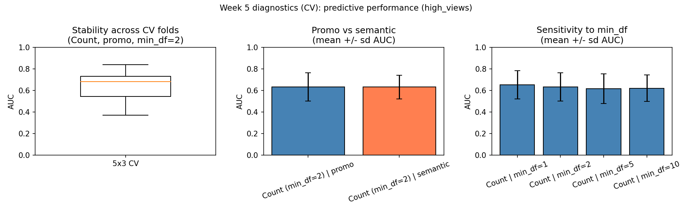
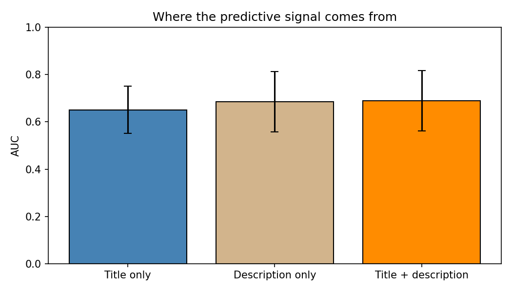
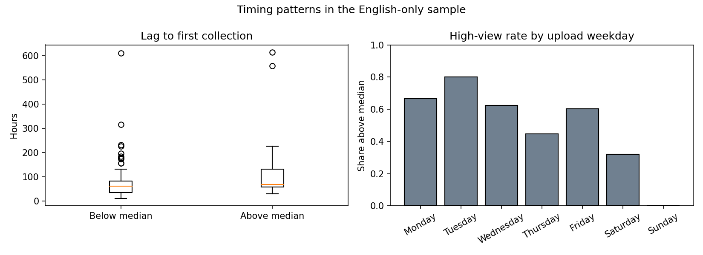
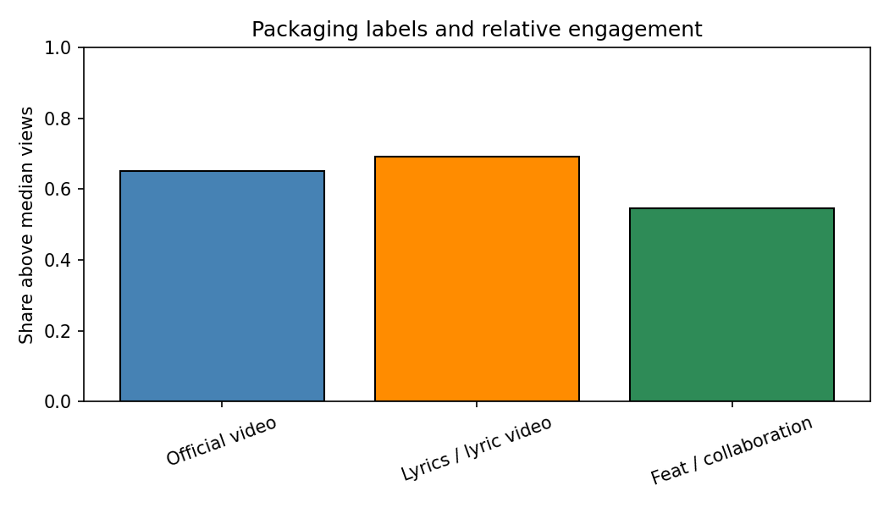
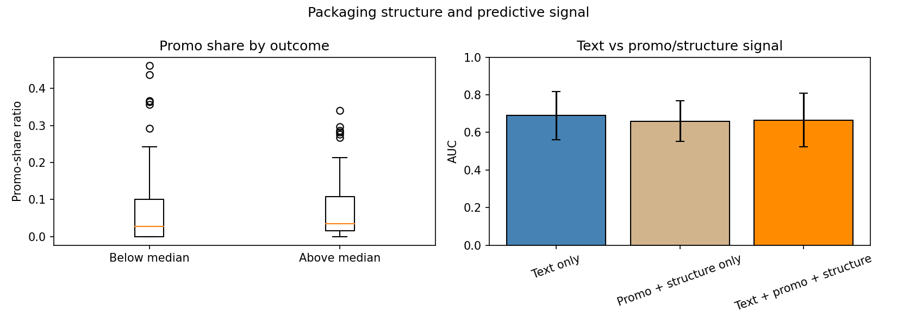

YouTube Trending Music Metadata and Relative Engagement
This report studies whether the language used in YouTube trending music-video metadata helps predict which videos receive relatively higher engagement within the trending set. The final analysis is restricted to the four English-speaking regions US, GB, CA, and AU so that language-based interpretation is not mixed across different languages.
Research Question and Motivation
The project asks whether titles and descriptions help identify which trending music videos will sit above the median in view counts within the collected sample. This matters because metadata is public, strategic, and visible. It can contain artist names, collaboration cues, release framing, and promotional language that may help explain how attention is organized on the platform.
The project does not make a causal claim. Views also depend on recommendation exposure, artist popularity, thumbnails, release strategy, and label promotion. Instead, the goal is to test whether metadata is useful as a measurable signal and to see what kind of signal it really contains.
Data
Source and Unit of Analysis
The data comes from the YouTube Data API v3 using videos.list with chart=mostPopular. Each row represents one trending music video. The final main dataset is stored in data/processed/trending_music_processed.csv and includes only US, GB, CA, and AU. A separate archive file keeps the broader all-region version, but it is not used for the final language-sensitive claims.
Key Variables
The outcome variable is high_views, coded as 1 if a video's view count is above the sample median and 0 otherwise. The project uses promo-inclusive text, semantic-filtered text, title-only and description-only text, timing variables from published_at, collection-lag features from the raw files, and a few transparent title labels such as official video and lyrics.
| Statistic | Value |
|---|---|
| Number of videos | 136 |
| Regions | US, GB, CA, AU |
| Median view count | 280,821 |
| Mean token count (promo) | 179.9 |
| Mean token count (semantic) | 173.7 |
| Mean lexical diversity (promo) | 0.647 |
| Mean lag to first collection | 95.4 hours |
The sample is moderate in size, so the report relies on repeated cross-validation instead of a single train/test split.
Problem Setup and Methods
The main task is binary text classification: can we predict whether a trending music video is above the sample median in views? The baseline is a majority-class dummy classifier. The main text models use bag-of-words features with logistic regression and repeated stratified cross-validation.
The final report extends the original project in four ways:
- title-only vs description-only vs combined text,
- timing analysis from upload timestamps and collection lag,
- release-format labels from titles,
- promo and structure controls compared with text.
These additions matter because they move the project beyond one overall AUC number and give more concrete conclusions about what the model is learning.
Baseline Evaluation
The first result is still modest but real. The dummy baseline stays at chance, while the best main text model, TF-IDF plus logistic regression, reaches about 0.694 AUC on the four-region sample. That is not strong prediction, but it is enough to say that metadata language is informative.
The earlier promo-versus-semantic diagnostic still holds as well. Promo and semantic text perform almost identically with Count features, so semantic filtering helps interpretation more than prediction.
| Model / Check | AUC (mean +/- sd) | Interpretation |
|---|---|---|
| Dummy baseline | 0.500 +/- 0.000 | Chance-level behavior, as expected. |
| Count (promo, min_df = 2) | 0.634 +/- 0.130 | Some predictive signal, but modest. |
| Count (semantic, min_df = 2) | 0.633 +/- 0.109 | Nearly identical to promo text. |
| TF-IDF (promo, min_df = 2) | 0.694 +/- 0.129 | Best main text model in the report. |

New Finding 1: The signal is not only in titles
A natural expectation is that titles carry most of the predictive signal because they are short, visible, and heavily branded. The four-region results are more interesting than that.
| Text source | AUC (mean +/- sd) |
|---|---|
| Title only | 0.651 +/- 0.100 |
| Description only | 0.685 +/- 0.128 |
| Title + description | 0.689 +/- 0.128 |
Description-only text performs almost as well as the combined model, while title-only text is weaker. This is an important change to the project's interpretation. The report should not claim that descriptions are just noise. In this sample, descriptions appear to carry a large share of the signal.

New Finding 2: Timing and structure matter at least as much as text
The strongest new result comes from the timing extension. A model using only timing and basic structure features reaches about 0.724 AUC, which is higher than the 0.689 AUC from text alone. Combining text with timing and structure pushes the result slightly higher again to about 0.728 AUC.
This does not make text unimportant. It means that release timing, collection lag, and simple packaging variables are very informative in this sample. It also strengthens the project's substantive conclusion: relative engagement is not only about wording.
The lag result is also worth noting because it goes against the simplest expectation. Above-median videos have a longer mean lag to first collection in our data than below-median videos. That suggests the lag variable is picking up release-cycle patterns rather than a direct measure of how quickly a video truly entered YouTube's trending system.

New Finding 3: Packaging labels matter, but unevenly
The report codes three simple title labels: official video, lyrics / lyric video, and collaboration markers such as feat or ft. These labels are transparent and easy to explain, which makes them useful for interpretation even though they are not perfect.
| Label | Count | High-view rate | Rest-of-sample rate |
|---|---|---|---|
| Official video | 23 | 0.652 | 0.469 |
| Lyrics / lyric video | 13 | 0.692 | 0.480 |
| Feat / collaboration | 11 | 0.545 | 0.496 |
Official-video and lyric-style labels are associated with higher relative engagement in this sample, while collaboration markers are weaker. This helps the project say something concrete about music-release packaging conventions rather than only about abstract word frequencies.

New Finding 4: Promo and structure carry overlapping signal
The final extension compares text with a small set of promo and structure variables such as promo share, title length, description length, and lexical diversity. These features do contain some signal on their own, reaching about 0.659 AUC. However, when they are added back to the text model, they do not improve performance beyond text alone.
This suggests that promo and structure variables overlap with information already present in the text rather than adding a clearly independent signal. The project therefore should not conclude that a simple "more promo means more views" pattern explains the data.

Interpretation and Final Conclusion
The strongest final conclusion is more nuanced than the earlier version of the project. Metadata language does contain predictive information about relative engagement among trending music videos in US, GB, CA, and AU. The best text model performs better than chance, and the promo-versus-semantic comparison still shows that semantic filtering helps interpretation more than prediction.
But the new analyses show that text is only one part of the story. Description text carries almost as much signal as the combined title-and-description field, which means descriptions should not be dismissed. Timing and basic structural variables are at least as important as text in this sample, and some packaging labels like official video and lyrics are associated with higher relative engagement. Promo and structure variables matter too, but mainly as overlapping signal rather than a clean independent source of predictive power.
Taken together, the project supports a stronger and more defensible claim than before: relative engagement among trending music videos is associated with a mixture of language, timing, and packaging signals rather than a pure effect of wording alone. The model is not simply learning catchy phrases. It is learning how releases are presented, when they appear, and which metadata conventions travel with higher-view videos in this English-language trending sample.
Just as importantly, the report still does not support a causal interpretation. It does not show that rewriting a title would raise views, and it does not automatically generalize beyond the trending music context. What it does show is that visible metadata and basic release context together provide a modest but meaningful signal of relative performance.
Limitations and Future Work
- The project studies trending music videos only, not all YouTube uploads.
- The final analysis is limited to four English-speaking regions for interpretability.
published_attiming is in UTC and may not perfectly match local release strategy.lag_hours_first_seenis based on the first collection timestamp in our raw files, not YouTube's true internal trending timestamp.- The release labels are rule-based and transparent, but they are still imperfect measurements.
- The sample is moderate in size, so some descriptive breakdowns should be interpreted cautiously.
The clearest next steps would be to collect a longer time window, improve the timing measurements, separate boilerplate description language from content language more carefully, and compare the same framework with one or two non-music categories.
References
- YouTube Data API v3 documentation for
videos.listandchart=mostPopular. - pandas documentation.
- matplotlib documentation.
Generative AI acknowledgment: generative AI tools were used for drafting, restructuring, and code assistance during project development. Final claims and report text were checked against repository outputs.